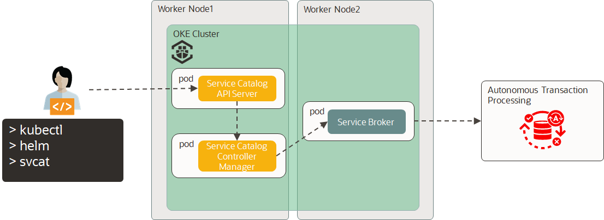
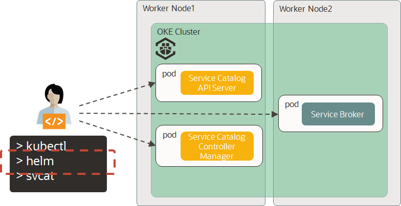
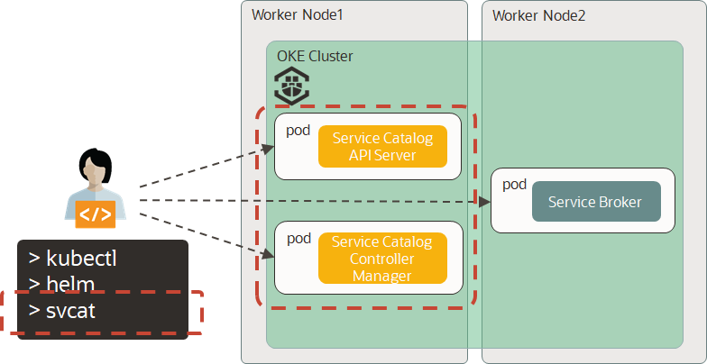
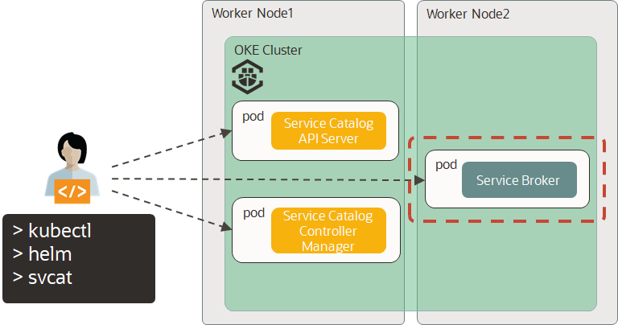

Service Brokerを使用したATPのプロビジョニング¶
このステップでは、Service Brokerを使用してATPをプロビジョニングする方法について説明します。
Service Broker、Service CatalogおよびOCI Service Brokerについて、説明します。
-
Service Brokerは、サードパーティが提供および管理する一連の管理サービスのエンドポイントです。
-
Service Catalogは、Kubernetesクラスタで実行されているアプリケーションが、クラウドプロバイダーが提供するデータストアサービスなどの外部管理ソフトウェアを簡単に使用できるようにする拡張APIです。
-
OCI Service Brokerは、OCI（Oracle Cloud Infrastructure）サービス用のOpen Service Broker API Specのオープンソース実装です。お客様はこの実装を使用して、Oracle Container Engine for Kubernetesまたは他のKubernetesクラスタにOpen Service Brokerをインストールできます。
このステップが完了すると以下の絵のような構成になります。

1. helmをインストールする¶
以下の図の赤枠部分をインストールします。

ServiceBrokerを利用するためにhelmをインストールします。
curl https://raw.githubusercontent.com/helm/helm/master/scripts/get-helm-3 | bash
helmバージョン情報を確認します。
helm version
version.BuildInfo{Version:"v3.0.2", GitCommit:"19e47ee3283ae98139d98460de796c1be1e3975f", GitTreeState:"clean", GoVersion:"go1.13.5"}
これで、helmのインストールは完了しました。
2. Service Catalogとsvcatツールをインストールする¶
以下の図の赤枠部分をインストールします。

Service Catalogのリポジトリを追加します。
Note
Service Catalogの詳細についてはこちらをご確認ください。
helm repo add svc-cat https://svc-catalog-charts.storage.googleapis.com
Service Catalogをインストールします。
helm install catalog svc-cat/catalog --set controllerManager.verbosity="4" --timeout 300s
svcatツールをインストールします。
"svcat"は、Service Catalogリソースを操作するためのコマンドラインインターフェイス（CLI）です。
curl -sLO https://download.svcat.sh/cli/latest/linux/amd64/svcat
chmod +x ./svcat
sudo mv ./svcat /usr/local/bin/
svcatツールのクライアントバージョン情報を確認します。
svcat version --client
svcatのクライアントバージョン情報が出力されることを確認します。
Client Version: v0.3.0-beta.2
これで、Service Catalogとsvcatツールのインストールは完了しました。
3. OCI Service Brokerをインストールする¶
以下の図の赤枠部分をインストールします。

oke-atp-workshopディレクトリに移動して、OCI Service Brokerリポジトリのクローンを実行します。
git clone https://github.com/oracle/oci-service-broker.git
oci-service-brokerディレクトリに移動します。
cd oci-service-broker
OCI Service Brokerをインストールするのは、ociアカウント情報などが含まれるSecretを作成する必要があります。該当Secretを作成します。
kubectl create secret generic ocicredentials \
--from-literal=tenancy=<tenancy_ocid> \
--from-literal=user=<user_ocid> \
--from-literal=fingerprint=<fingerprint> \
--from-literal=region=<region> \
--from-literal=passphrase=<passphrase> \
--from-file=privatekey=<private_key_path>
対象のパラメータは以下のとおりです。
| key | value |
|---|---|
| tenancy_ocid | テナントOCID |
| user_ocid | ユーザーOCID |
| fingerprint | API Signingキーのフィンガープリント |
| region | リージョン識別子。今回は"us-ashburn-1" |
| passphrase | ""(空文字) |
| private_key_path | /home/opc/.oci/oci_api_key.pem |
OCI Service Brokerをインストールします。
helm install oci-service-broker charts/oci-service-broker/. \
--set ociCredentials.secretName=ocicredentials \
--set storage.etcd.useEmbedded=true \
--set tls.enabled=false
OCI Service Brokerの登録先のnamespaceを設定します。今回は、defaultのnamespaceに登録します。
sed -i -e 's/<NAMESPACE_OF_OCI_SERVICE_BROKER>/default/g' ./charts/oci-service-broker/samples/oci-service-broker.yaml
OCI Service Brokerの登録を実行します。
kubectl create -f ./charts/oci-service-broker/samples/oci-service-broker.yaml
Service Brokerの情報を確認します。
svcat get brokers
Service Brokerの情報が表示されることを確認します。ステータスが"Ready"になります。("Readyになるまで、3~5分かかる場合があります")
NAME NAMESPACE URL STATUS
+--------------------+-----------+----------------------------------------+--------+
oci-service-broker http://oci-service-broker.default:8080 Ready
OCI Service Brokerで利用できるサービスの一覧を確認します。
svcat get classes
利用できるOCIサービスが表示されます。
NAME NAMESPACE DESCRIPTION
+----------------------+-----------+------------------------------------------+
atp-service Autonomous Transaction
Processing Service
object-store-service Object Storage Service
adw-service Autonomous Data Warehouse
Service
oss-service Oracle Streaming Service
それぞれのサービスで利用可能なプランを確認します。
svcat get plans
OCI Service Brokerが提供するサービスのプランが表示されます。
NAME NAMESPACE CLASS DESCRIPTION
+----------+-----------+----------------------+--------------------------------+
standard atp-service OCI Autonomous Transaction
Processing
archive object-store-service An Archive type Object Storage
standard object-store-service A Standard type Object Storage
standard adw-service OCI Autonomous Data Warehouse
standard oss-service Oracle Streaming Service
これで、OCI Service Brokerのインストールは完了しました。
4. ATPをプロビジョニングする¶
Note
ATPはデフォルトで"Admin"ユーザが設定されます。OCIコンソールでATPをプロビジョニングした場合も同様になります。アプリケーションで使用するATPユーザの作成については6.アプリケーション実行ユーザの作成で説明します。
oci-service-brokerのサンプルをベースにして、ATPをプロビジョニングします。
サンプルファイルにあるコンパートメントを更新します。
<コンパートメントOCID>を各自のコンパートメントOCIDへ変更してください。
sed -i -e 's/CHANGE_COMPARTMENT_OCID_HERE/<コンパートメントOCID>/g' ./charts/oci-service-broker/samples/atp/atp-instance-plain.yaml
サンプルファイルにあるATPの名称を更新します。今回は、"tfOKEATPDB"とします。
sed -i -e 's/osbdemo/tfOKEATPDB/g' ./charts/oci-service-broker/samples/atp/atp-instance-plain.yaml
サンプルファイルにあるATPのパスワードを更新します。今回は、"TFWorkshop__2000"とします。
sed -i -e 's/s123456789S@/TFWorkshop__2000/g' ./charts/oci-service-broker/samples/atp/atp-instance-plain.yaml
ATPをプロビジョニングします。
kubectl create -f ./charts/oci-service-broker/samples/atp/atp-instance-plain.yaml
プロビジョニング状況を確認します。
svcat get instances --all-namespaces
プロビジョニング直後は、ステータスは"Provisioning"になります。
NAME NAMESPACE CLASS PLAN STATUS
+----------------+-----------+-------------+----------+--------------+
osb-atp-demo-1 default atp-service standard Provisioning
5分程度経過するとステータスは"Ready"になります。
NAME NAMESPACE CLASS PLAN STATUS
+----------------+-----------+-------------+----------+--------+
osb-atp-demo-1 default atp-service standard Ready
ATPへアクセスするためのCredencialを作成します。
kubectl create -f ./charts/oci-service-broker/samples/atp/atp-binding-plain.yaml
Credencialの情報を確認します。
svcat get bindings
Credencialの情報が表示されることを確認します。(以下では"atp-demo-binding")
NAME NAMESPACE INSTANCE STATUS
+------------------+-----------+----------------+--------+
atp-demo-binding default osb-atp-demo-1 Ready
CredencialはSecretとして管理されており、ATPにアクセスするためのWalletファイルが含まれています。
kubectl get secrets atp-demo-binding -o yaml
ATPのパスワードが格納されるSecretを作成します。 サンプルファイルにあるプレーンテキストと暗号化テキスト両方を更新します。(パスワードはbase64で暗号化します)
sed -i -e 's/s123456789S@/TFWorkshop__2000/g' ./charts/oci-service-broker/samples/atp/atp-demo-secret.yaml
sed -i -e 's/czEyMzQ1Njc4OVNACg==/VEZXb3Jrc2hvcF9fMjAwMAo=/g' ./charts/oci-service-broker/samples/atp/atp-demo-secret.yaml
Secretを作成します。
kubectl create -f ./charts/oci-service-broker/samples/atp/atp-demo-secret.yaml
これで、ATPのプロビジョニングは完了しました。
5. ATPのWalletファイルを作成する¶
後続の手順でDevCSからATPに対してサンプルデータを登録します。
そのために必要なWalletファイルを作成しておきます。
今回はfetch_wallet.shを実行して、Walletファイルを作成します。
cd ..
cd oke_atp_workshop
chmod +x fetch_wallet.sh
./fetch_wallet.sh
Walletファイル"Wallet_tfOKEATPDB.zip"が作成されるので、レポジトリにpushします。
git add Wallet_tfOKEATPDB.zip
git commit -m "Walletファイルの追加"
git push
作成したWallet_tfOKEATPDB.zipを使用して、ATPへ接続できます。
次のステップでは、このファイルを使用してATPへのサンプルデータ登録を行います。
これで、ATPのWalletファイルの取得は完了しました。
6.ATPのユーザの作成¶
4. ATPをプロビジョニングするでは、デフォルトユーザとして"Admin"ユーザでデータベースが作成されます。
ほとんどの場合、アプリケーションがデータベースを利用する際は"Admin"ではなく、別ユーザを作成します。
今回も同様に、ATPを利用するためのデータベースユーザを作成しましょう。
今回のハンズオンでは、ATPのユーザとパスワードを環境変数としてアプリケーションに読み込ませるように設定しています。
ここでは、ATPのユーザとパスワードを環境変数として作成するためにSecretを作成します。
今回は、ATPのユーザを"handson"、パスワードを"Welcome12345"として作成します。
kubectl create secret generic spring-security \
--from-literal=spring.user.name=handson \
--from-literal=spring.user.password=Welcome12345
以上で、ATPのユーザとパスワードの設定は完了です。
続いてATPへのサンプルデータ登録に進んでください。